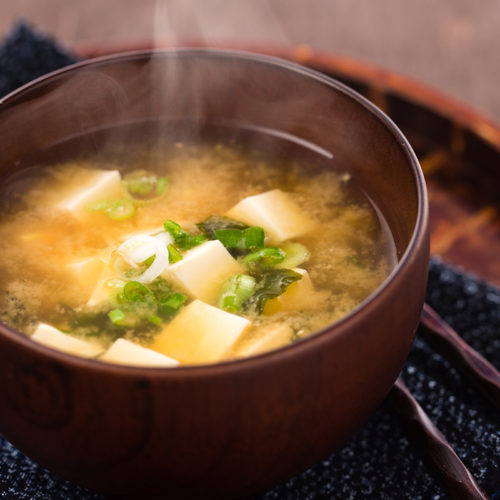

MISO SOUP
8 SERVINGS
120 MINUTES

INGREDIENTS
- 8 g Konbu
- 3 L Water
- 40 g Bonito
- White Miso (to taste)
- Semi-firm Tofu
- Green Onion
- Butter (optional)
DIRECTIONS
MAKE THE DASHI
- Soak konbu in cold water for 1 hour.
- Bring water to just bellow a simmer (85 degrees C).
This prevents the dashi from ever becoming bitter.
- Once the water is at temp, remove konbu.
- Add the bonito all at once and remove from heat.
- Steep bonito until it settles and then strain.
This can take up to 30 minutes.
FINISHING THE MISO SOUP
- Add white miso and taste. Add more to your liking.
(Opt.) Add butter to the stock to give it extra flavour.
- Cut tofu into small cubes and place in the bottom of a bowl.
- Chop green onions and add to bowl.
- Ladle in hot miso soup and enjoy!
Back to Recipes